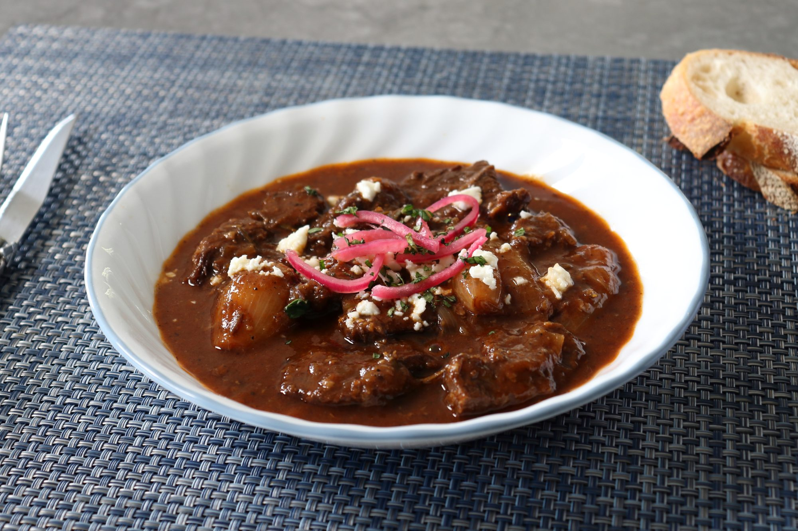

Greek-Style Beef Stew

Greek-Style Beef Stew
Tender beef and sweet shallots ina tangy,aromatic sauce make my version of beef stifado one you'll surely want to try!
Ingredients
- 3 pounds boneless beef chuck roast, cut into 2-inch cubes
- 2 tespoons freshly ground black pepper
- 1 tablespoon kosher salt
- 4 tablespoons olive oil, divided
- 1 pound small shallots
- 1/2 cup diced onion
- 4 clovers garlic,minced
- 1 pinch kosher salt
- 3 tablespoons tomato paste
Directions
Step 1
Place beef in a bowl and season generoisly with pepperand kosher salt. Cover and transfer to the refrigeator until ready to use;up tp 1 day is fine
Step 2
Leaving the root ends in place,cut off the shallot tops.Remove and discard skins.